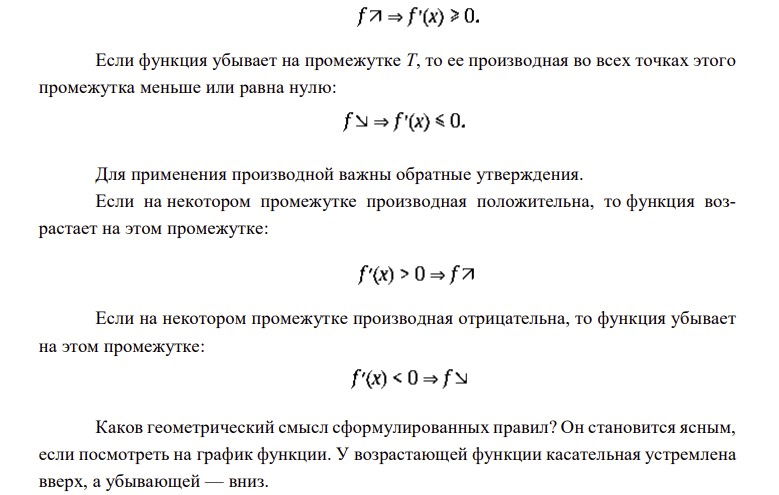
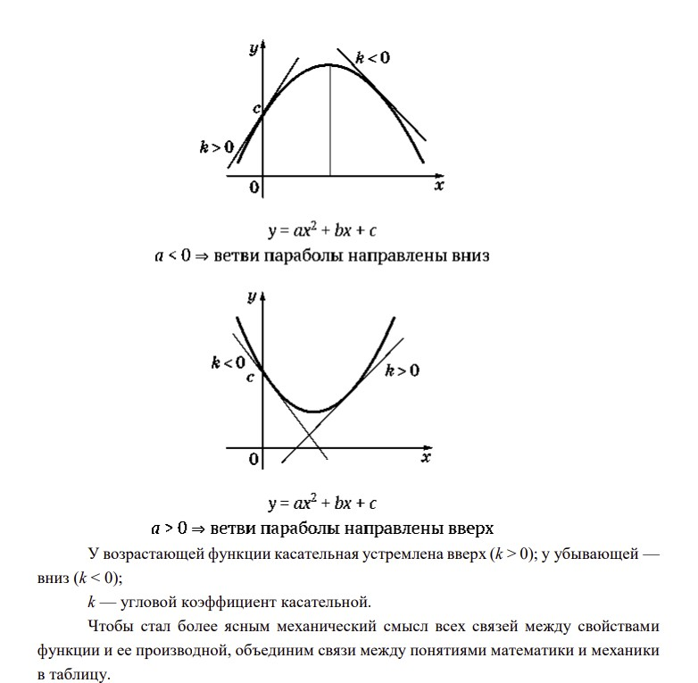
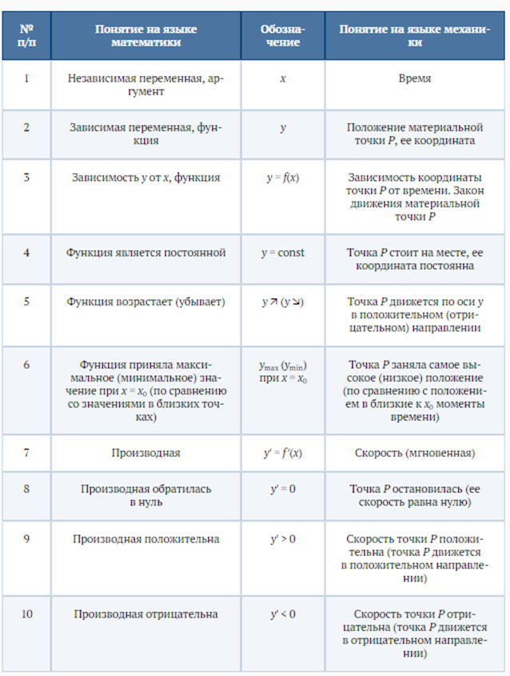
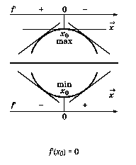
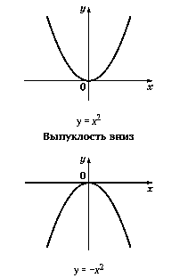
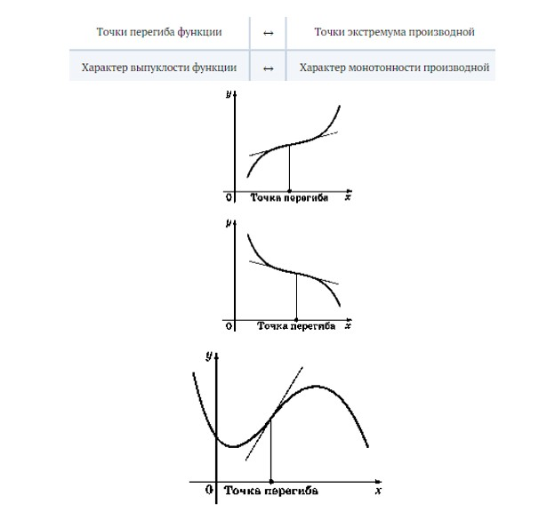
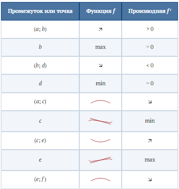
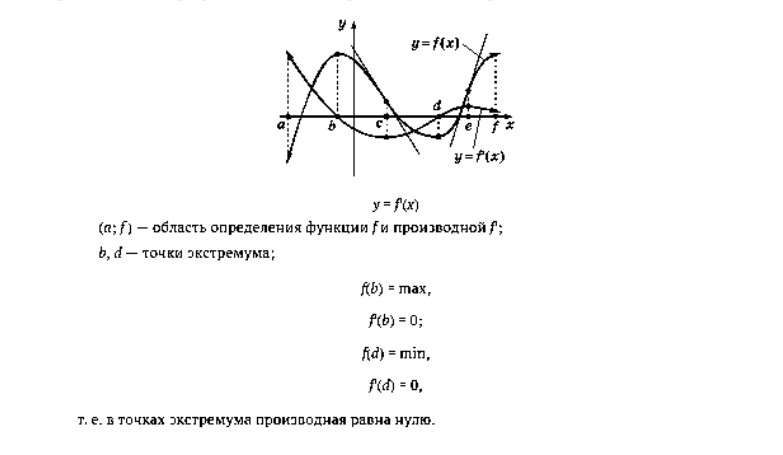
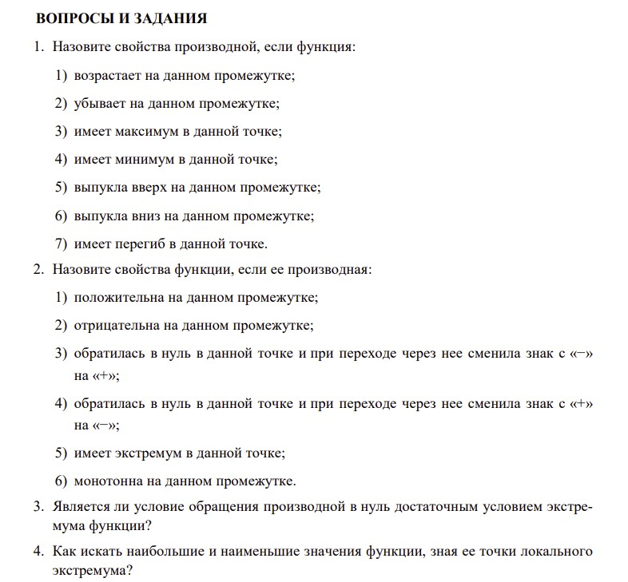

Как связаны между собой свойства функции и ее производная?
1. Монотонность функции. Пусть функция y = f(x) монотонна на некотором промежутке и имеет производную y′ в каждой точке этого промежутка. Если функция возрастает на промежутке T, то ее производная во всех точках этого промежутка больше или равна нулю:

Геометрический смысл
Проведем касательные к графикам функций:

2. Таблица связи между понятиями математики и механики.

3. Экстремумы функции.Напомним, что экстремумами называют минимумы и максимумы функции, т. е. точки, где она локально принимает наименьшее или наибольшее значение.
Термин «локально» (местно) означает, что свойство выполняется вблизи данной точки, а не на всей области определения. Наименьшее (наибольшее) значение функции на всей области определения можно назвать глобальным минимумом (максимумом).
Сформулируем основной критерий локального экстремума.
Если гладкая функция имеет экстремум во внутренней точке промежутка T, то в этой точке ее производная обращается в нуль: x0 — точка экстремума ⇒ f′(x0) = 0.
Если в некоторой внутренней точке промежутка производная обратилась в нуль и при прохождении через эту точку сменила свой знак, то в этой точке функция имеет экстремум, т. е. f′(x0) = 0 и меняет знак ⇒ x0 — точка экстремума.
В сформулированном критерии говорится о двух свойствах производной — обращение в нуль в данной точке и смена знака при переходе через нее. Возникает вопрос: «Что происходит, если производная, обратившись в некоторой точке в нуль, при переходе через нее не меняет знак?» Графические примеры приведены на рисунке. Простейшим формульным примером может служить функция y = x 3 , производная которой y′ = 3x 2 не меняет знака при переходе через точку x0 = 0. Ясно, что в этом случае одного условия f′(x0) = 0 недостаточно для того, чтобы точка x0 была точкой экстремума.

4.ВыпуклостьНаглядным свойством графика функции на некотором промежутке является его выпуклость. Она может быть направлена как вверх (например, у функции y = −x 2 ), так и вниз (y = x 2 ).

Выпуклость вверх
Точка, в которой меняется характер выпуклости, называется точкой перегиба функции. Если в этой точке провести касательную, то видно, что по одну сторону от точки перегиба график функции начинает уходить выше касательной (с этой стороны график становится выпуклым вниз), а по другую сторону — график уходит вниз (становится выпуклым вверх).
Выпуклость функции и смена ее характера легко определяются с помощью производной:

Почему выполняются сформулированные связи между свойствами функции и ее производной?
Полное формульное (аналитическое) доказательство требует развитой техники математического анализа, которая появилась примерно на 150 лет позднее обнаружения полезности производной для исследования функций.
Наиболее простым и убедительным аргументом может служить механическая интерпретация производной как скорости. В этом варианте из приведенной ранее таблицы можно извлечь необходимые объяснения.
Геометрическое толкование функции и ее производной достаточно убедительно, поэтому в дальнейшем будем его использовать.
Как на одном графике сравнить свойства функции и ее производной?

Сравнение по графику поведения функции f и ее производной f'

